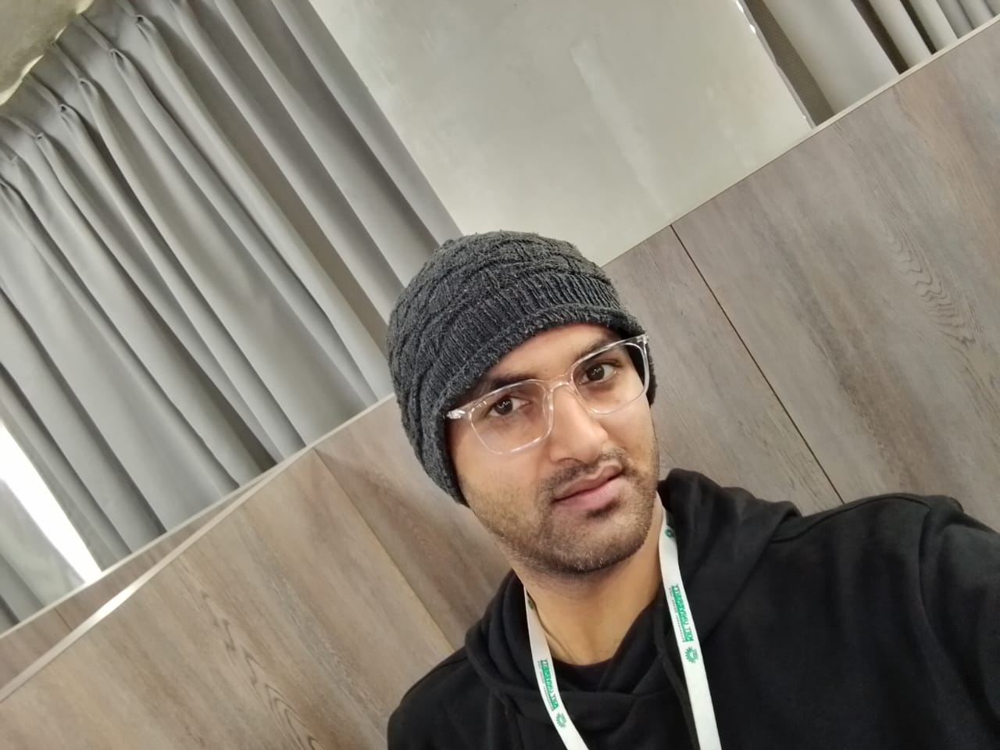

Assistant Professor – School of Computer Engineering
KIIT University, Bhubaneswar
PhD Scholar – Computer Science
Motilal Nehru National Institute of Technology (MNNIT), Allahabad

Rakesh Kumar Rai is an Assistant Professor in the School of Computer Engineering at KIIT University, Bhubaneswar, and a PhD Scholar in Computer Science at MNNIT Allahabad.
His research focuses on EEG signal analysis and computational neuroscience, particularly the development of deep learning frameworks for cognitive state detection and neurological disorder analysis.
For the complete publication list, please visit my Google Scholar profile .
Personal Email: rakeshnitn25@gmail.com
Official Email: rakesh.raifcs@kiit.ac.in